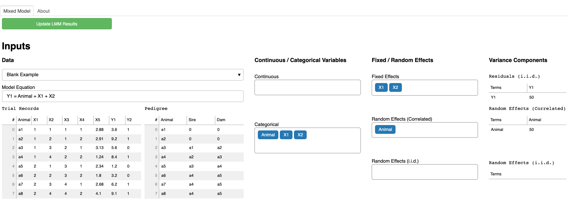

Decoding mixed model equations using LMMonBoard
High-throughput Phenotyping Driven Quantitative Genetics @CMA-FCT-NOVA
Background
This is the day 1 computer lab session for quantitative genetic analysis. The goal of this exercise is to understand mixed model equations (MME) using an interactive MME visualization tool LMMonBoard.
Exercise 1
- Select
Blank Examplefrom theDatadrop-down list. - In
Model equation, remove+ X2 + X5so that you haveY1 = Animal + X1. - In the
Fixed / Random Effectscolumn, selectAnimalfrom theRandom Effects (i.i.d.)drop-down list. - Click
Update LMM Resultson the right upper corner.

Assume that the residual variance \(\sigma^2_e = 1\) and the additive genetic variance \(\sigma^2_g = 1\).
Questions
- How many fixed effects are in the model? How many levels?
- How many random effects are in the model? How many levels?
- Interpret each component of MME.
Exercise 2
- In
Model equation, add+ X2so that you haveY1 = Animal + X1 + X2. - In the
Fixed / Random Effectscolumn, selectAnimalfrom theRandom Effects (i.i.d.)drop-down list. - Click
Update LMM Resultson the right upper corner.

Questions
- How many fixed effects are in the model? How many levels?
- How many random effects are in the model? How many levels?
- Interpret each component of MME.
Exercise 3
- In the
Fixed / Random Effectscolumn, selectAnimalfrom theRandom Effects (Correlated)drop-down list. - Click
Update LMM Resultson the right upper corner.

Questions
- How many fixed effects are in the model? How many levels?
- How many random effects are in the model? How many levels?
- Interpret each component of MME.
Exercise 4
- In
Model equation, add+ X5so that you haveY1 = Animal + X1 + X2 + X5. - In the
Fixed / Random Effectscolumn, selectAnimalfrom theRandom Effects (Correlated)drop-down list. - In the
Continuous / Categorical Variablescolumn, selectX5from theContinuousdrop-down list. - Click
Update LMM Resultson the right upper corner.

Questions
- How many fixed effects are in the model? How many levels?
- How many random effects are in the model? How many levels?
- Interpret each component of MME.